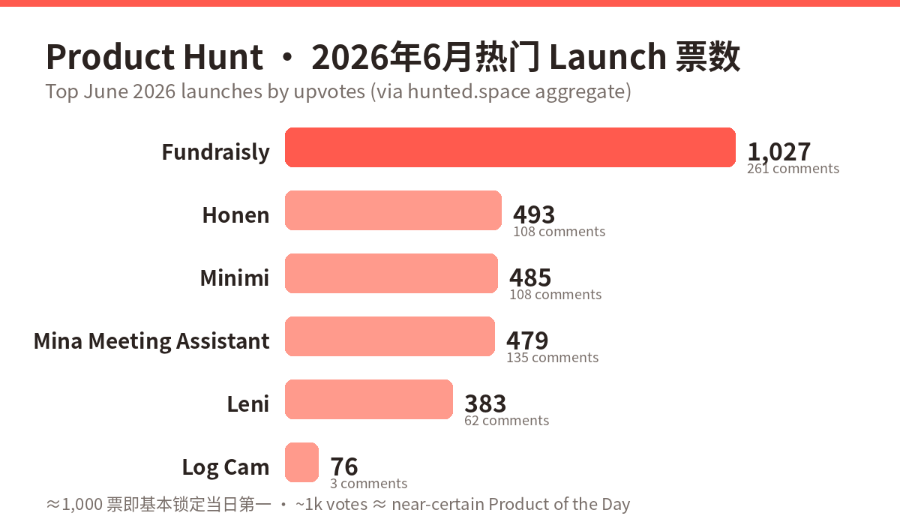
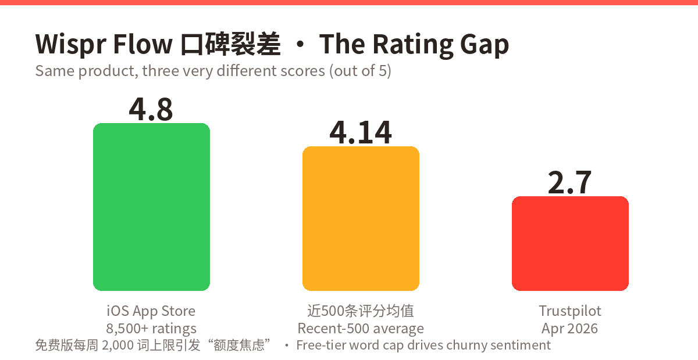
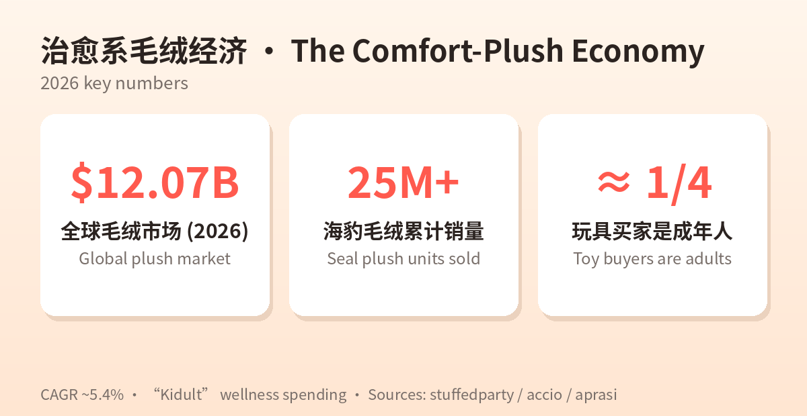

⚠️ 方法说明 Methodology ：运行环境网络白名单拦截了对目标站点的直接抓取（news.ycombinator.com、producthunt.com、trends.google.com、a16z.com、amazon.com、etsy.com、x.com、linkedin.com、xiaohongshu.com），按任务规则未绕过，全部改用 WebSearch 公开摘要；HN 当日首页与 Google Trends 当日榜单因此仅有月度级概览。Direct fetches were blocked by the workspace allowlist; no bypass attempted — all data via WebSearch summaries. Raw data: raw/2026-06-13/
① 当日概览 · Daily Overview
中文 ：本周全球产品圈的主线是 「AI 从演示走向执行」 。Product Hunt 六月榜单被 AI 自动化与垂直 Agent 霸榜：AI 融资代理 Fundraisly 以约 1,027 票领跑当月，会议中实时干活的 Mina、地产投资垂直 AI Leni、机器人远程接管平台 Sentinel、语音输入独角兽候选 Wispr Flow 紧随其后。a16z 同步抛出 “Fat Startup” 论点——AI 时代赢家卖的是「结果」而非「功能」。消费端的另一条主线是情绪经济 ：海豹毛绒累计销量 2,500 万+，毛绒市场 2026 年达 120.7 亿美元，成年人贡献近 1/4 购买力。一边是 AI 替你打工，一边是毛绒替你疗愈。
English : This week's through-line is "AI moving from demo to execution." Product Hunt's June board is dominated by AI automation and vertical agents: Fundraisly leads (~1,027 votes), followed by in-meeting executor Mina, real-estate-finance AI Leni, teleoperation platform Sentinel, and voice breakout Wispr Flow. a16z's thesis lands on cue: fat startups win by shipping outcomes, not features. In parallel, the comfort economy : seal plushies at 25M+ sales, a $12.07B plush market, adults ≈ ¼ of buyers. AI does your work; plush does your healing.
# 信号 Signal 数据 Data 1 PH 六月最热 launch Fundraisly ~1,027 votes / 261 comments 2 语音输入赛道估值 Voice input valuation Wispr Flow $700M post-money · $81M raised 3 a16z 论点 thesis "Fat startups win — ship outcomes, not features" 4 消费端 Consumer 毛绒市场 plush market $12.07B (2026, CAGR ~5.4%) 5 Google Trends 宏观 NBA 季后赛登顶 playoffs top; 汉坦病毒 hantavirus 进全球 Top25 6 HN 六月情绪 mood AI 讨论「成熟化、商业化」matured & commercial 7 X 风向 platform MaveHealth 2.58M / Composio 2.03M / Lica 1.44M views

② 产品深度分析 · Product Deep-Dives
维度 Dimension 中文 English 商业模式 SaaS 订阅；锚定融资这一超高价值事件，付费意愿强 SaaS for founders mid-raise; anchored to a high-value outcome (a closed round) 成功因素 创始人 Anna 系 $600M+ AUM VC 前分析师（组合含 10 家独角兽）；300K+ 投资人图谱+热引荐路径；"$100M+ 已助融"社会证明；LinkedIn 自来水 Founder credibility; 300K+ investor graph + warm-path mapping; "$100M+ raised" proof; organic LinkedIn buzz 核心功能 分析投资人与交易→筛活跃匹配→挖热引荐→自动外联跟进→直接约会议 Analyze → shortlist active fits → warm intros → automated outreach → booked meetings 细分市场 FundraisingTech / “AI 投行化” Fundraising tech ("AI-as-junior-banker") 目标用户 种子–A 轮创始人，尤其缺人脉的二线市场 Pre-seed–Series A founders outside hub networks 设计品牌 命名直白；一句话定位「替你做完投资人研究和外联」 Plain naming; one-line job-to-be-done positioning 产品数据 PH ~1,027 票 / 261 评论（六月最热）；宣称 90 天 20–40 场合格会议 ~1,027 votes / 261 comments; claims 20–40 qualified meetings in 90 days 代表评价 LinkedIn 用户自发安利；评论区共鸣「融资外联太痛」 Organic shares; comments resonate on outreach pain
点评 Take ：把 a16z「卖结果不卖功能」演绎得最直白——它卖的不是 CRM，是「约上投资人」。The cleanest live demo of the thesis: it sells booked meetings, not software.
维度 中文 English 商业模式 Freemium：免费 2,000 词/周 → Pro $15/月（年付 $143.99）→ 企业版；免费额度刻意“不够用” Freemium: capped free tier → Pro $15/mo → Enterprise; the cap deliberately under-serves 成功因素 全应用可用；“写成你的风格”；$81M 融资势能；卡位 AI 时代语音输入范式 Works everywhere; writes in your style; $81M war chest; the new input layer 核心功能 口述→去语气词、修语法、贴合个人风格成文；Mac/Windows/iOS 全局 Speech → polished, style-matched text, system-wide 细分市场 AI 听写/语音生产力（vs Superwhisper $9.99） AI dictation (vs Superwhisper, Spokenly) 目标用户 高频写作者、口述提示词的开发者、RSI 用户 Heavy writers, prompt-dictating devs, RSI sufferers 设计品牌 “Flow”心流叙事；高级定价站位 "Flow" narrative; premium anchoring 产品数据 $81M 融资、$700M 估值；iOS 4.8★(8,500+)；近500条均值 4.14；Trustpilot 2.7★；品牌搜索 1,600+/月、~40% 月增 $81M raised, $700M val; iOS 4.8★; recent-500 avg 4.14; Trustpilot 2.7★; ~40% MoM search growth 代表评价 好评“事实上的高端默认选项”；差评“额度焦虑”“截屏隐私不适” "De facto premium option" vs "word-count anxiety", privacy unease

点评 Take ：增长教科书+口碑警报并存：4.8 与 2.7 的裂差说明免费额度焦虑与隐私观感正在透支品牌。Textbook growth with a reputation leak.
3. Mina Meeting Assistant — 会中执行型 AI getmina.ai ↗
维度 中文 English 商业模式 B2B 按席位（价格未公开）；切销售/工程/CS 三个预算池 B2B per-seat (pricing TBD); three budget pools 成功因素 品类再定义：从「会后纪要」到「会中执行」；数月内测；直连 CRM/Jira 即时价值 Category redefinition: in-call execution; long beta; instant CRM/Jira value 核心功能 进 Zoom/Meet/Teams；实时答问；会中生成纪要/提案/CRM 更新；自动建单、跟进、订下次会议 Joins calls; answers live; mid-call summaries/proposals/CRM writes; tickets & follow-ups 细分市场 AI 会议助手 2.0（执行型） Meeting AI 2.0 (agentic) 目标用户 销售（MEDDPICC/CRM）、工程（scrum/Jira）、客户成功（QBR/续约） Sales, Engineering, Customer Success 设计品牌 “Your AI Teammate”——同事而非工具 A colleague, not a tool 产品数据 PH ~479 票 / 135 评论（评论率极高） ~479 votes / 135 comments (high engagement) 代表评价 「会还没开完 CRM 已更新」的演示冲击力 The wow of CRM updated before the call ends
点评 Take ：会议 AI 第二幕：纪要是地板，执行是天花板。Notes are table stakes; execution is the ceiling.
4. Leni — 地产投资垂直 AI leni.co ↗
维度 中文 English 商业模式 B2B 订阅（PH 首月一折 PHLENI） B2B subscription (90%-off launch promo) 成功因素 「准确率优先」反向定位；决策溯源满足审计；Yardi/Entrata/RealPage 深集成成壁垒 Accuracy-first positioning; decision traces for audit; integration moat 核心功能 承销、市场研究、组合报告、文档抽取、投资备忘录；上下文图谱+UDM；先检索后生成 Underwriting→memos workflows; context graph + UDM; retrieval-before-generation 细分市场 PropTech × FinTech 垂直 AI Vertical AI for RE finance 目标用户 地产基金、资管团队、REIT 分析部门 RE funds, asset teams, REIT analysts 设计品牌 「全球最准的投资人 AI」以可验证性为钩子 Verifiability as the brand hook 产品数据 383 票/62 评论（6/5 日第3）；21,000+ 决策溯源；日处理 1 亿+行；自称基准超 GPT/Claude/Manus 383 votes #3 of day; 21k+ traces; 100M+ rows/day; claims benchmark wins 代表评价 「每个答案都能点开看依据」 "Every answer opens into its evidence"
点评 Take ：垂直 AI 标准打法——用行业数据模型+审计能力换信任溢价。Trade auditability for a trust premium.
维度 中文 English 商业模式 B2B 基建 SaaS（按机器人/坐席），吃「自治失败兜底」预算 B2B infra SaaS; monetizes the autonomy-failure budget 成功因素 踩中 2026 机器人量产潮；卖「100% 在线率」结果；「市面最快」低延迟叙事；YC 背书 Rides the deployment wave; sells uptime; latency-first story; YC badge 核心功能 全球远程操控；自治异常人工秒级接管；队列运维监控 Teleop anywhere; instant human takeover; fleet ops 细分市场 Teleop-as-a-Service 机器人运维基建 Robot ops infrastructure 目标用户 机器人公司、仓储/配送/巡检运营方 Robotics cos; warehouse/delivery/inspection fleets 设计品牌 “Sentinel 哨兵”可靠性隐喻 Military-grade reliability metaphor 产品数据 PH Week 24 精选；具体票数未公开检索到 PH Week 24 featured; votes not surfaced 代表评价 「自治的最后一公里仍然是人」 "The last mile of autonomy is still human"
点评 Take ：软件长在硬基础设施上——机器人越多，人类接管越值钱。Every robot shipped makes human takeover worth more.
6. Log Cam — iPhone 专业摄影 App App Store ↗
维度 中文 English 商业模式 一次性买断、无订阅 ——订阅疲劳时代的反向定价One-time purchase — counter-pricing vs subscription fatigue成功因素 把 iPhone 17 Pro 独占（Open Gate/Apple Log 2）带给 iPhone 13+ 全系含非 Pro；专业监看工具链；创作者社区口碑 Brings 17-Pro-exclusive tricks to all iPhone 13+; pro monitoring; community distribution 核心功能 RAW 帧直录 HEVC(300Mbps)/ProRes；Apple Log/Log2、F-Log、LogC3、S-Log3、V-Log；假色/斑马；LUT 预览/烧录；USB-C 外录 HEVC/ProRes from RAW; 6 log curves; false color/zebras; LUT; external recording 细分市场 移动端专业摄像 MobileFilmmaking Mobile pro videography 目标用户 独立影人、调色工作流创作者、低预算剧组 Indie filmmakers, budget productions 设计品牌 功能即品牌（名字直写 Log + Open Gate） Feature-as-brand naming 产品数据 PH 76 票/3 评论（6/9 日第28）——小众而精准 76 votes #28 — small but precise 代表评价 「非 Pro 机型拍 log，等于白送一台 B 机」 "Log on a non-Pro iPhone = a free B-cam"
点评 Take ：吃透平台能力溢出（Apple 新特性→旧设备复刻）就是一门生意。Arbitraging platform capability spillover is a business.
7. 治愈系毛绒经济（趋势）The Comfort-Plush Economy stuffedparty.com ↗
维度 中文 English 商业模式 低单价高复购 + 盲盒/收藏溢价 + 包挂/桌搭场景扩张 Low ticket, high repeat + blind-box premium + scene expansion 成功因素 成人情绪消费（kidult ≈1/4 买家、客单更高）；拍摄友好自带 UGC；低饱和配色融入成人居家 Adult emotional spending; camera-friendly UGC engine; muted palettes for adult homes 核心功能 情绪价值本体：减压、陪伴、桌面治愈；可收集可晒 The product *is* emotional value; collectible & shareable 细分市场 治愈系玩偶（海豹、水豚、食物造型、捏捏） Comfort plush (seals, capybaras, kawaii food, squishies) 目标用户 18–35 都市女性为主；学生与职场解压人群 Urban 18–35, mostly women; stressed students & professionals 设计品牌 简单剪影+强情绪暗示（呆/萌/丧）；奶油低饱和 Simple silhouette + strong emotional cue; cream low-saturation 产品数据 海豹毛绒 2,500 万+销量；市场 $12.07B（CAGR ~5.4%）；Amazon 玩具 M&S：饺子捏捏、LED 画板飙升 Seal plush 25M+; $12.07B market; Amazon M&S risers: dumpling squishies, LED boards 代表评价 「放工位上，老板骂我我就捏它」 "It does nothing and that's the point"

点评 Take ：与 AI 生产力同涨的是「反生产力」消费——效率越卷，情绪出口越贵。Anti-productivity consumption rises with AI productivity.
③ 横向对比 · Cross-Product Comparison
产品 Product 类型 Type 商业模式 Model 目标用户 Audience 关键数据 Key data 一句话 One-liner Fundraisly AI Agent SaaS 订阅 早期创始人 ~1,027 votes；平台已助融 $100M+ 替你约投资人 Wispr Flow 语音生产力 Freemium $15/mo 知识工作者 $81M raised · $700M val · 4.8★/2.7★ 说话即成文 Mina 会议 Agent B2B 席位 销售/工程/CS ~479 votes / 135 comments 会中替你干活 Leni 垂直 AI B2B 订阅 地产投资团队 383 votes · 100M+ rows/day 可审计的投资 AI Sentinel 机器人基建 B2B SaaS 机器人公司 YC 系 · Week 24 featured 自治失灵人来救 Log Cam 创作工具 买断制 独立影人 76 votes · iPhone 13+ 全系 老 iPhone 变电影机 治愈毛绒 Plush 消费趋势 低价高复购 18–35 城市女性 海豹 25M+ · $12.07B 市场 情绪价值实体化
④ 关键洞察 · Key Insights
1. 卖结果，不卖功能 Sell outcomes, not features. Fundraisly=约到会议，Mina=会中完成 CRM，Sentinel=100% 在线率，Leni=审计级准确率——与 a16z 六月 "fat startup" 论点完全同频。Every winner anchors on a measurable outcome.
2. 垂直信任是新护城河 Vertical trust is the new moat. 通用模型够强之后，溢价来自行业集成（Leni×Yardi）、可溯源与失败兜底（Sentinel）。The premium moves to integrations, auditability, failure coverage.
3. Freemium 反噬 Freemium backlash. Wispr Flow 4.8★/2.7★ 裂差：额度焦虑短期转化、长期口碑赤字。Cap-anxiety converts now, costs reputation later.
4. 订阅疲劳的缝隙 Subscription-fatigue gaps. Log Cam 用买断制在订阅制对手之间撕开小众市场。One-time pricing carves share among weary creators.
5. 效率与疗愈双线并行 Productivity ∥ healing. 同一批焦虑用户在 AI 工具与治愈消费两端付费；小红书 61.33% 用户因「真实体验内容」被种草——情绪叙事＞参数叙事。The same anxious users pay on both ends.
6. 分发即产品 Distribution is product. 毛绒拍起来好看=自带 UGC；Mina 会中演示=传播瞬间；Fundraisly 在 LinkedIn 的目标用户聚集地自然发酵。Virality is designed in, not bolted on.
来源 Sources：producthunt.com（weekly/2026/24 · monthly/2026/6，经 hunted.space 聚合）· getmina.ai · leni.co · wisprflow.ai · a16z.com/category/ai · speedrun.substack.com · blog.mean.ceo 六月汇总 · eesel.ai / voicescriber.com / droidcrunch.com / spokenly.app / toolradar.com · amzprep.com · outfy.com · printify.com · accio.com · stuffedparty.com · aprasi.com · socialbee.com · woshipm.com · itopmarketing.com · traveldaily.cnraw/2026-06-13/。Generated by scheduled task · 2026-06-13